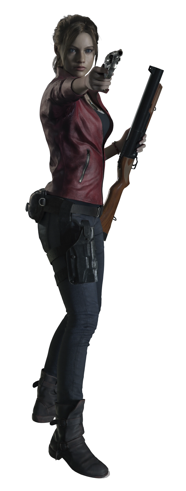
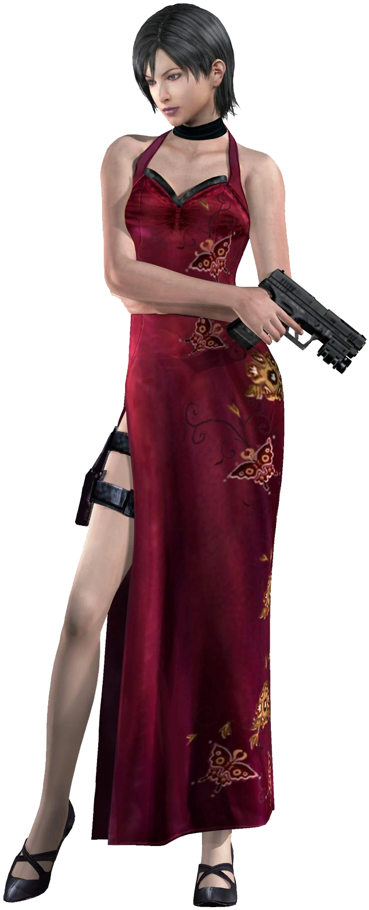
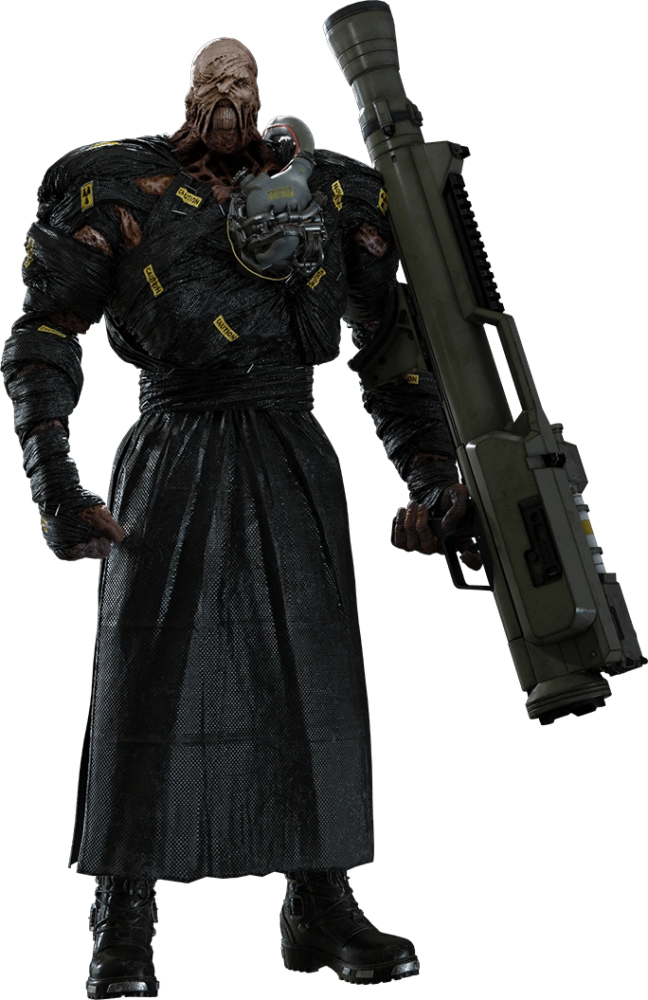
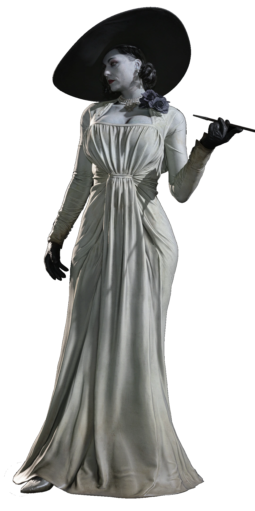
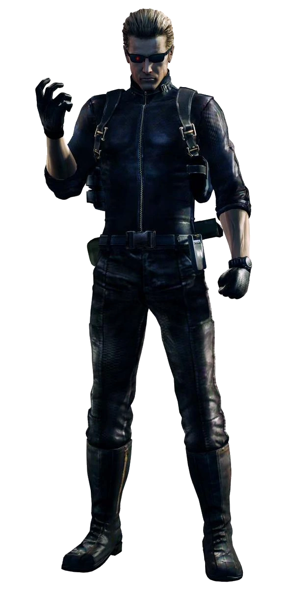

-
Jill Valentine
HP 60

Description
Jill Valentine is an American Special Operations Agent (SOA) of the Bioterrorism Security Assessment Alliance, of which she is a co-founder and an original member. She is a respected high-ranking operator, owing to her commitment in eradicating bioterrorism and her survival amid to the Biohazardous outbreaks in Arklay County in 1998.
- Status: Alive
- Date of birth: 1974
- Blood type: B
-
Claire Redfield
HP 50
Description
Claire Redfield is a current member of the human rights organization, TerraSave. She is the younger sister of BSAA operative and former S.T.A.R.S. member Chris Redfield. Since her survival in the Raccoon City incident in 1998, Claire would become involved or end up in the midst of several Biohazard outbreaks around the world, prompting her, as well as Chris, to devote her career to combating the threat of Bio Organic Weapons.
- Status: Alive
- Date of birth: 1979
- Blood type: O
-
Ada Wong
HP 65
Description
Ada Wong is the pseudonym of an enigmatic unnamed spy of Asian-American descent. She has gained notoriety in the corporate world for being able to handle serious situations and the most difficult requests without guilt. She acted secretly in the background of many biohazard incidents and collected information which became useful to several organisations, while at the same time operating to undermine them. However, Wong follows only her own "true purpose" and has often betrayed the organisations and customers she is affiliated with to achieve it.
- Status: Alive
- Date of birth: 1974
- Blood type: AB
-
Nemesis-T Type
HP 120
Description
Nemesis was a series of experimental Bio Organic Weapons. Created by Umbrella Europe's No. 6 Laboratory, the Nemesis-T Types were the culmination of the Nemesis Project with the successful implantation of NE-α parasites within T-103 hosts, presenting Umbrella with a highly intelligent and powerful creature. Several Nemesis-T Types were produced, though only one - Nemesis-T02 - is known to have experienced combat. This individual was sent in Raccoon City and nicknamed the "Pursuer".
- Status: Deceased
- Date of creation: Before September 1998
- Purpose: Prototype supersoldier
-
Alcina Dimitrescu
HP 200
Description
Alcina Dimitrescu commonly referred to as Lady Dimitrescu, was a mutant human aristocrat. From the 1950s until her death in 2021, Dimitrescu maintained a pseudo-feudal rule over the peasantry near Castle Dimitrescu as one of the Four Lords of the region.
- Status: Unknown
- Date of birth: Prior to 1914
- Purpose: Unknown
-
Albert Wesker
HP 80
Description
Albert Wesker was an accomplished virologist notorious for his work with groups affiliated with the bio-weapons black market. Originally one of the test subjects in Project W who specialised in biotechnology and bioengineering. As a senior researcher linked to the t-Virus Project as early as 1978, he bore witness to and at times shaped Umbrella's B.O.W. research. He officially left the company soon after a stall in the Tyrant Project and began work as a spy, leading to a career in the United States Army and eventually with S.T.A.R.S. as its Captain.
- Status: Presumably Deceased
- Date of birth: 1960
- Blood type: O